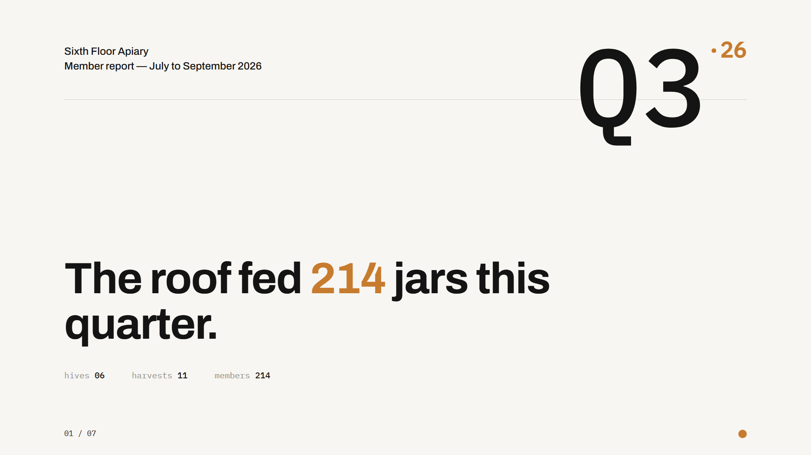
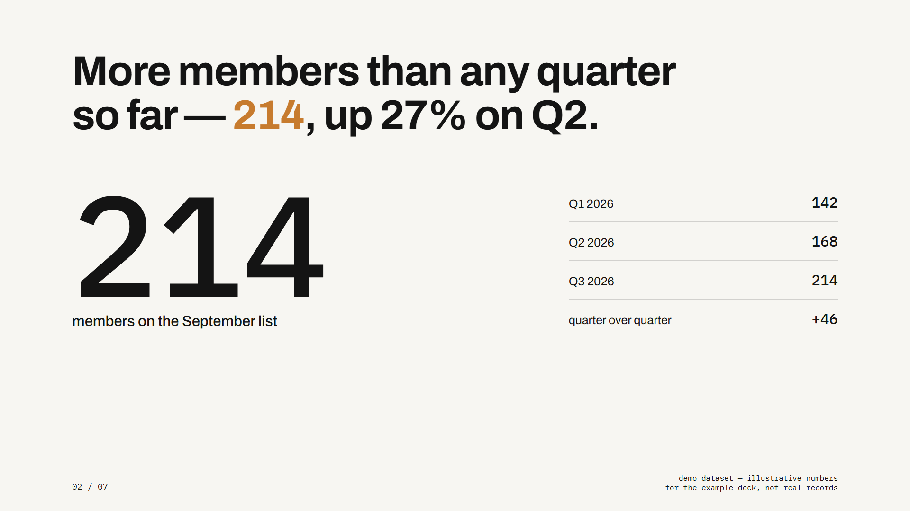
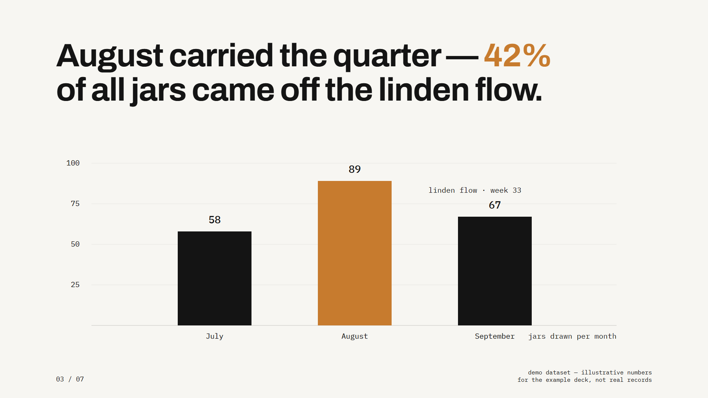
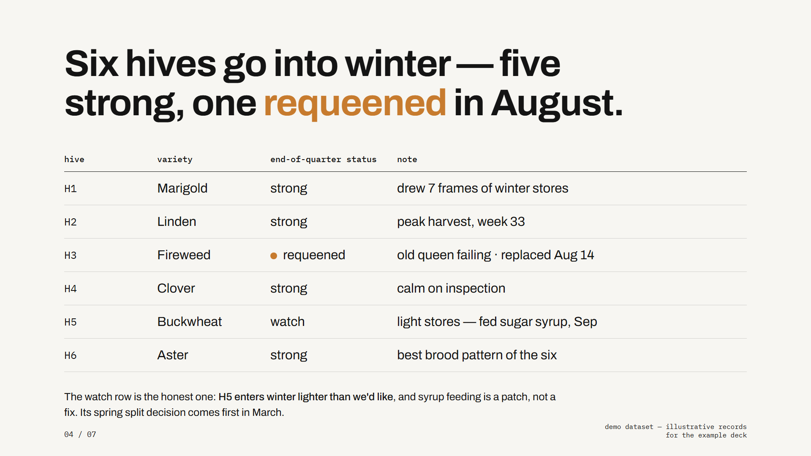
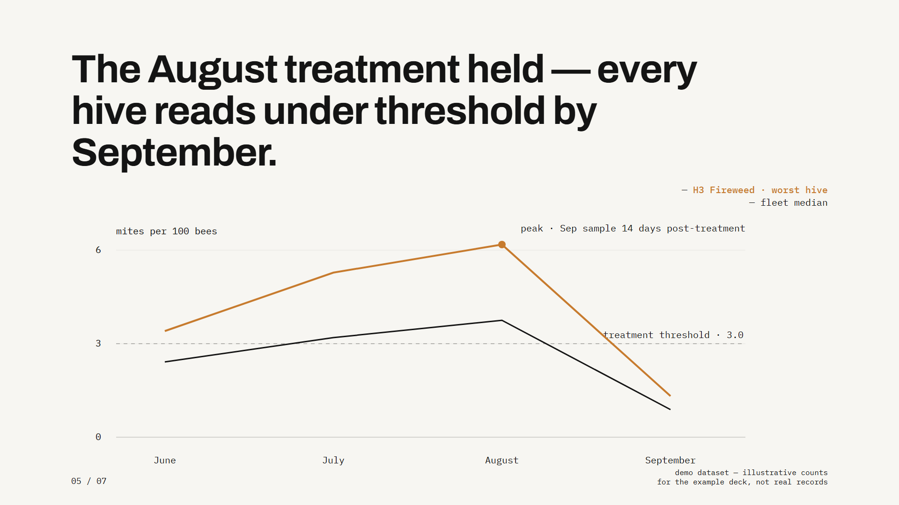
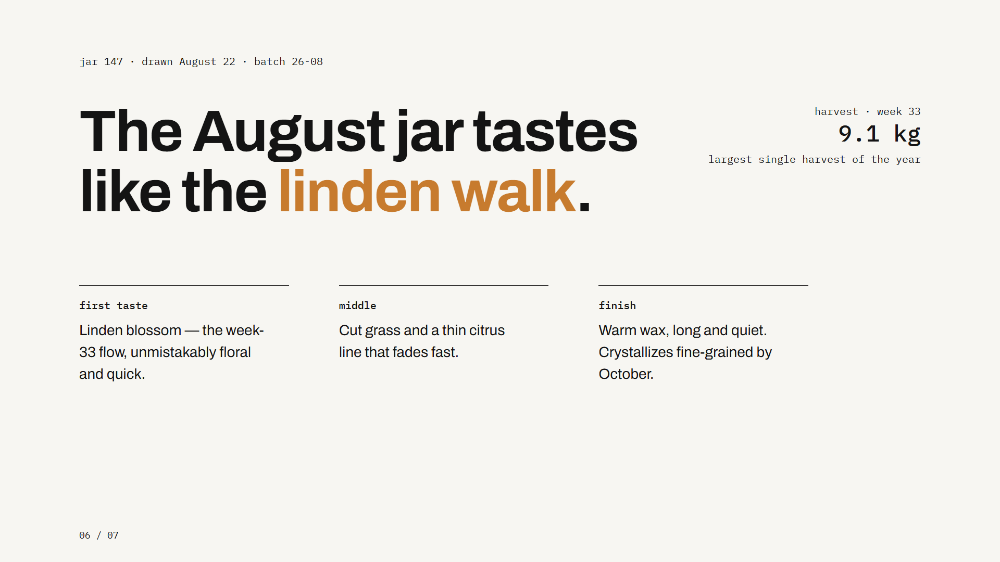
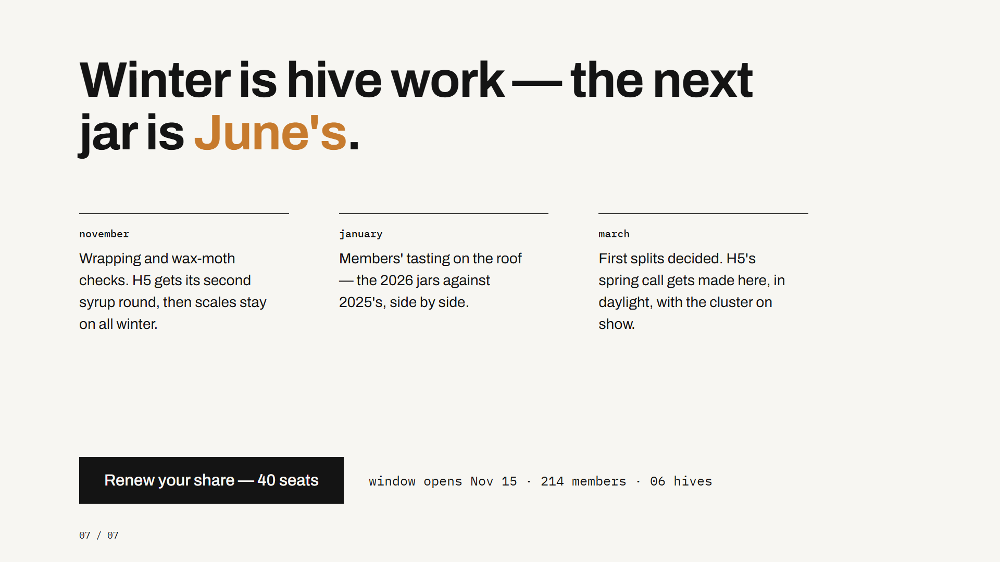
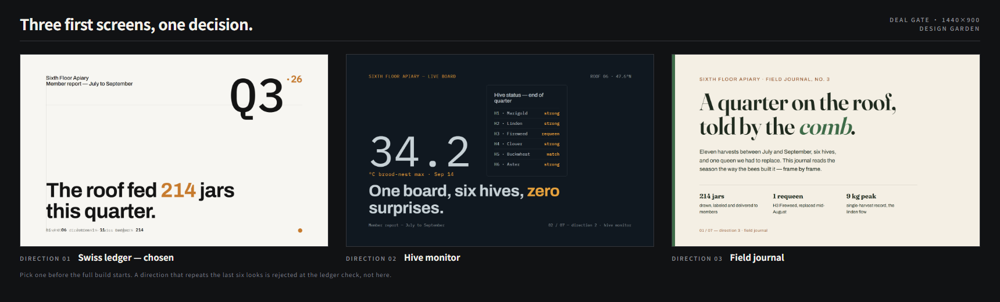

01 · cover — the quarter in one sentence
02 · membership — big number + context rows
03 · harvest — bar chart, August accented
04 · hives — table beats chart for exact lookups
05 · varroa — line + threshold + annotation
06 · tasting — whitespace does the work
07 · winter & renewal — plan + CTA
The DEAL, in the flesh. Three structurally different first screens were built before the full deck: the Swiss ledger (chosen — a quarterly data report argues for precision), the hive monitor (reads as a live product, not a member letter) and the field journal (its voice would fight the data slides). Screens live in deal/; the same figure-level deal was run for the bike-share report's lead chart (see bike-share-report/deal/) and at cover level for the night-run carousel (cover-a / cover-b).